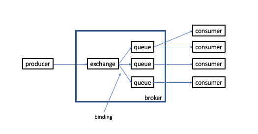

RabbitMQ - Introduction
- RabbitMQ (RMQ) is an Open Source Message Broker
- A Message Broker transports messages from senders (producers) to receivers (consumers).
- RMQ Implements AMQP (Advanced Message Queuing Protocol) version 0-9-1
- RMQ has been extended to support other protocols
- RMQ offers persistence and message ordering
- See also Python - Pika

- A producer is a user application which sends messages
- A consumer is a user application which receives messages
- A queue is a FIFO data structure which stores messages
- In RabbitMQ, a producer never sends messages directly to a queue.
- Instead, producers write to an exchange
- The exchange determines if the message is written to one queue, multiple queues or is discarded
- A Binding is the relationship between an exchange and a queue
- Queues can bind to multiple exchanges
AMQP 0-9-1
- AMQP (Advanced Message Queueing Protocol) is an application layer protocol which enables conforming client applications (producers and consumers) to communicate with conforming middleware brokers.
- AMQP is a binary, wire level protocol. I.e. it defines the format in which data is transported over the network
- AQMP provides flow controlled, message-oriented communcation with message-delivery guarantees such as at most once, at least once, and exactly once.
- AMQP provides authentication and encryption
- producers, exchanges, queues, bindings, and consumers are AQMP entites
Design Patterns
- Work Queue - distributing work to N consumers
- 1 queue, multiple consumers [connected to the same queue]
- Publish / Subscribe - sending messages to multiple consumers at once
- Routing - routing messages to a specific endpoint
- Topics - receiving messages based on a pattern (topic)
- RPC - Request / Reply
- Publisher Confirms - messages the client published are confirmed by the broker asynchronously.
Virtual Host (vhost)
- RabbitMQ is a multi-tenant system
- Connections, exchanges, queues, bindings, user permissionings, etc. belong to a virtual host (vhost)
- Each vhost has a name. When a client connects to RabbitMQ, it specifies a vhost name to connect to
- Vitrual hosts are created and deleted using either
rabbitmqcdtlor via HTTP
# creating a vhost using CLI tools rabbitmqctl add_vhost vhost123 # creating a vhost using HTTP request curl -u userename:password -X PUT http://rabbitmq.local:15672/api/vhosts/vhost123
Publisher Confirms
- If a message is marked as persistent, publisher confirms means the message has been received by the publisher's broker, sent to all other connected brokers and written to disk by each and every broker.
- Split Brain does not seem to be handled well with RabbitMQ. Depending on your application, it might be best to implement application level acknowledgements.
At Most, At Least Once, Exactly Once Delivery
At Most Once Delivery
- Code which does not use Consumer Acknowledgements or Publisher Confirms
- Results in simple code with fast execution speed.
- However, messages can get lost
At Least Once Delivery
- Code which does not use Consumer Acknowledgements or Publisher Confirms
Exactly Once Delivery
- A unicorn
- Does not exist
Flags
immediateflag - equivalent toTTL = 0mandatoryflag - guarantees there is at least one queue interested in the message. If this condition is not met, publish will immediately fail
Dead Letter Exchanges
- Messages from a queue can be dead-lettered
- Dead-lettered is when a message is republished to an exchange when any of the following occur:
- The message is negatively acked (NACK) by a consumer using
basic.rejectorbasic.nackwithrequeueparameter set tofalse - The message expires due to a per message TTL
- The message is dropped because a queue is full (exceeded length limit)
- The message is negatively acked (NACK) by a consumer using
rabbitmqctl
# list unacknowledged messages rabbitmqctl list_queues name messages_ready messages_unacknowledged # list exchanges rabbitmqctl list_exchanges # list bindings rabbitmqctl list_bindings